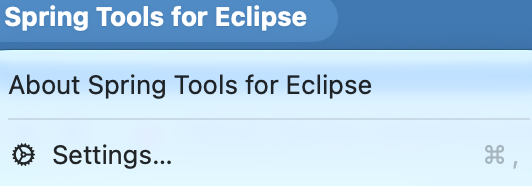
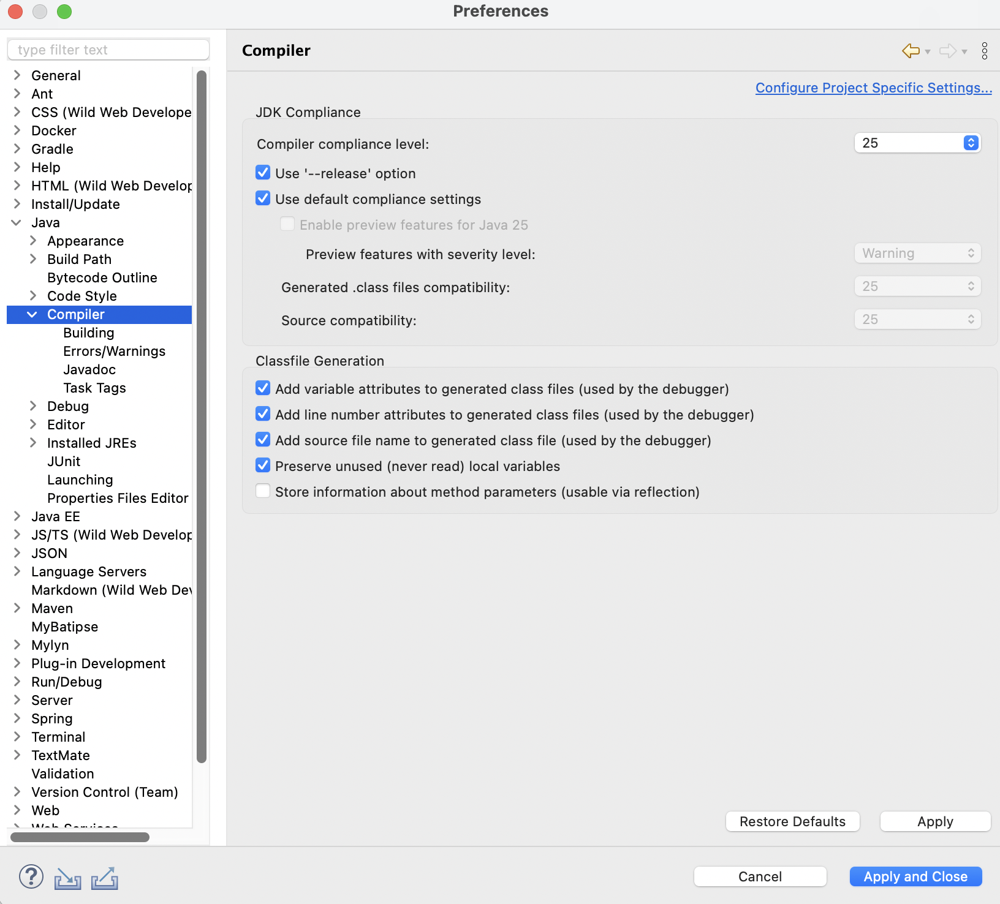
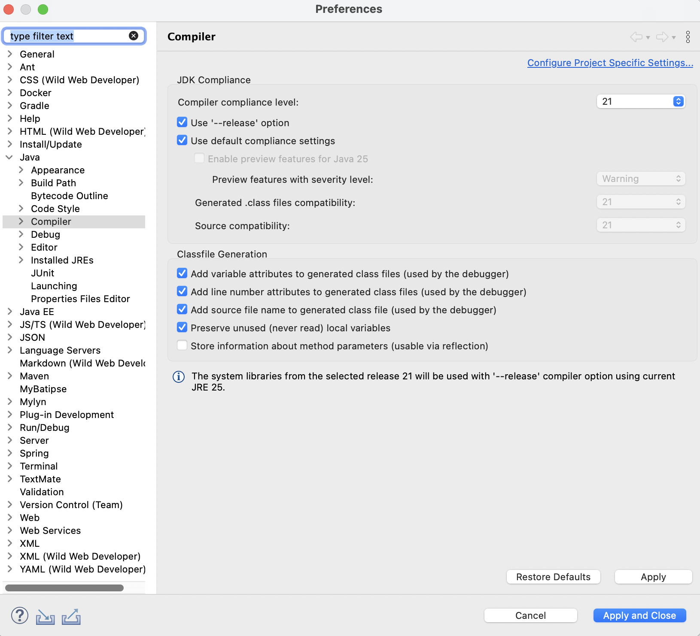

OS 설정
예전 프로젝트 열려다 STS5로 한참 삽질한 이야기: Lombok인 줄 알았는데 결국 범인은 Java 25였다
예전 Spring 프로젝트를 STS5로 열다가 처음에는 Lombok 문제라고 생각했고, 강제로 붙이고 재서명까지 했는데도 해결되지 않았다. 끝까지 확인해 보니 진짜 원인은 STS가 물고 있던 Java 25 환경과 프로젝트 요구 버전의 차이였다.
문제 상황
과거 프로젝트를 열어야 해서 STS5로 가져왔는데, 바로 열리지 않았다. 처음에는 Log4j 쪽 에러를 내면서 자꾸 뻗는 모습이 먼저 보였고, 그 과정에서 Lombok 관련 증상도 같이 보여서 getter나 builder가 제대로 인식되지 않는 느낌이 났다. 그래서 자연스럽게 “일단 Lombok이 문제인가?”라고 생각하게 됐다.
그래서 lombok.jar를 직접 넣고, .ini에도
-javaagent를 추가해 강제로 먹였다. 그 전에
java -jar lombok.jar로 자동 설치를 먼저 시도했지만,
여기서는 STS5가 잡히지 않았다. 그래서 결국 수동 주입으로 방향을 바꿨다.
앱 내부 파일을 건드린 뒤에는 macOS 코드 서명 문제를 피하려고 재서명까지 했다. 당시에는 “Lombok만 강제로 붙이면 되겠지”라고 보고 먼저 작업했지만, 프로젝트는 여전히 정상적으로 올라오지 않았다.
설정을 확인할 때는 먼저 Preferences로 들어가면 된다.
macOS에서는 보통 Command + ,로 바로 열 수 있고,
메뉴를 따라 마우스로 들어가도 된다.

Command + ,로 Preferences에 바로 들어갈 수 있다.
단축키가 익숙하지 않다면 메뉴를 마우스로 눌러 들어가도 된다.
STS에서 Lombok이 안 먹는 증상은 실제 원인 하나만으로 생기지 않을 수 있다. 내 경우에는 Log4j 에러로 먼저 뻗는 현상, Lombok 설정 문제처럼 보이는 첫 증상과 프로젝트 Java 버전 불일치가 겹쳐 있었다.
1. STS5에 Lombok 강제 적용
GUI 인스톨러로 잘 안 붙거나 경로 선택이 꼬일 때는 STS 앱 내부에
lombok.jar를 직접 넣고 .ini를 수정하는 편이 빠르다.
내 경우에도 java -jar lombok.jar를 먼저 실행해 봤지만
설치 대상 목록에서 STS5를 제대로 잡지 못했다. 그래서 자동 설치 대신
앱 내부에 직접 넣고 설정을 수정하는 방식으로 갔다.
내가 정리한 최소 작업은 아래 두 단계였다.
cp lombok.jar /Applications/SpringToolsForEclipse.app/Contents/Eclipse/
open -e /Applications/SpringToolsForEclipse.app/Contents/Eclipse/SpringToolsForEclipse.ini
그리고 -vmargs 위에 아래 줄을 넣었다.
-javaagent:/Applications/SpringToolsForEclipse.app/Contents/Eclipse/lombok.jar
여기서 중요한 점은 -javaagent가
-vmargs 아래가 아니라 위에 있어야 한다는 것이다.
위치가 잘못되면 넣은 것처럼 보여도 적용이 안 된다.
2. macOS에서 재서명까지 해야 할 수 있다
STS 앱 내부 파일을 건드리면 macOS 코드 서명이 깨져서 앱이 바로 종료되거나 이상하게 뜨는 경우가 있다. 그래서 Lombok만 넣고 끝내지 않고 재서명까지 함께 했다.
xattr -cr /Applications/SpringToolsForEclipse.app
sudo codesign --force --deep --sign - /Applications/SpringToolsForEclipse.app
codesign --verify /Applications/SpringToolsForEclipse.app && echo "OK"여기까지 끝내면 보통은 “이제 되겠지” 싶다. 실제로 나도 여기서 문제가 끝난 줄 알았다. 그런데 프로젝트는 여전히 기대한 상태로 열리지 않았다.
3. 진짜 원인은 Lombok이 아니라 Java 버전까지 겹친 것이었다
계속 보니 STS 자체가 물고 있는 실행 환경과 프로젝트가 기대하는 컴파일 버전이
달랐다. 처음 확인했을 때는 Compiler compliance level이 아예
25로 잡혀 있었다.

25였다.
과거 프로젝트는 그보다 낮은 Java 버전을 기준으로 잡혀 있었기 때문에, 이 상태에서는 Lombok만 억지로 붙여도 문제가 완전히 사라지지 않았다. 즉, 겉으로는 Lombok 미인식처럼 보였지만 실제로는 STS 실행 JRE와 프로젝트가 기대하는 Java 레벨이 어긋난 상태였다. 예전 프로젝트가 Java 8, 11, 17, 21 같은 특정 버전에 맞춰져 있다면, IDE가 더 높은 버전 기준으로 잡혀 있을 때 예상보다 많은 것이 같이 꼬일 수 있다.

21로 맞췄고, 하단에는
using current JRE 25 문구가 보였다.
Lombok이 안 먹을 때 보이는 에러와 Java 버전 불일치에서 파생되는 빌드 문제는 체감상 비슷하게 보일 수 있다. 여기에 Log4j 쪽 예외까지 같이 섞이면 더더욱 원인을 한 방향으로 오해하기 쉽다. 그래서 “Lombok만 해결하면 된다”로 너무 빨리 결론 내리면 진짜 원인을 놓치기 쉽다.
4. 해결은 프로젝트 버전에 맞게 Java를 낮추는 것이었다
결국 해결 포인트는 STS를 최신 JRE로만 돌리는 것이 아니라, 프로젝트가 실제로 사용하는 Java 버전에 맞춰 Compiler compliance와 JRE를 조정하는 것이었다.
전체 워크스페이스 설정을 건드려도 되지만, 과거 프로젝트 하나만 맞춰야 한다면 프로젝트 단위 설정이 더 안전하다.
Preferences > Java > Compiler에서 기본값이25로 잡힌 것을 먼저 확인했다.- 여기서 프로젝트가 쓰는 버전에 맞춰
Compiler compliance level을 낮췄다. - 필요한 Java 버전에 맞게 JRE 설정도 함께 맞췄다.
체크리스트
STS에서 Lombok이 안 먹는 것처럼 보일 때는 아래 순서로 보면 시간을 덜 낭비한다.
특히 Spring Boot 프로젝트라면 Lombok만 보기 전에 먼저
Compiler compliance와 프로젝트 Java 버전부터 확인하는 편이 안전하다.
Preferences > Java > Compiler에서 현재 compliance와current JRE문구를 먼저 본다.- 프로젝트 Java 버전과 다르면 먼저
Compiler compliance level과 JRE가 어떻게 잡혀 있는지부터 맞춘다. - 그다음에도 Lombok 증상이 남아 있으면
lombok.jar적용 여부를 확인한다. SpringToolsForEclipse.ini에-javaagent가-vmargs위에 있는지 본다.- macOS라면 앱 내부를 수정한 뒤 재서명이 필요한 상태인지 확인한다.
이번 케이스는 “STS5에서 Lombok이 안 먹는다”가 출발점이었지만,
원인을 끝까지 딱 잘라 하나로 확정할 수 있었던 것은 아니다. Gradle 기준으로 보면
Lombok은 원래 의존성에서 잘 따라와야 하는 쪽이라, 실제로는
Java 25 환경 때문에 같이 터졌는지,
Lombok 문제와 Java 버전 문제가 동시에 겹쳤는지를
완전히 분리해서 확인하지는 못했다. 다만 과거 프로젝트를 최신 IDE로 열 때는
Lombok만 보지 말고 current JRE와 compiler compliance도
꼭 함께 보는 편이 안전하다는 점은 분명했다.